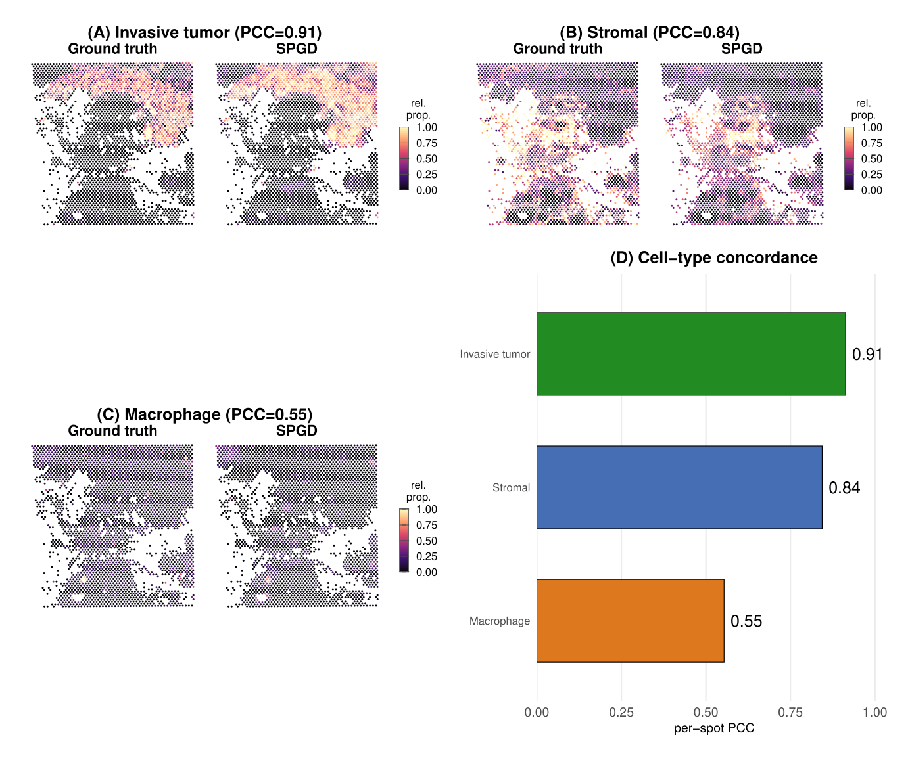
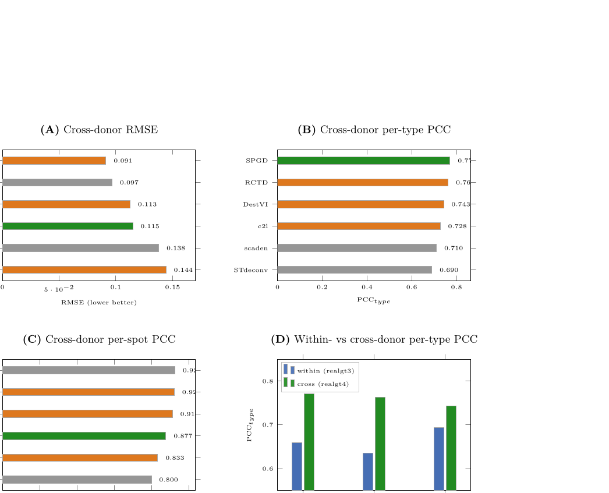
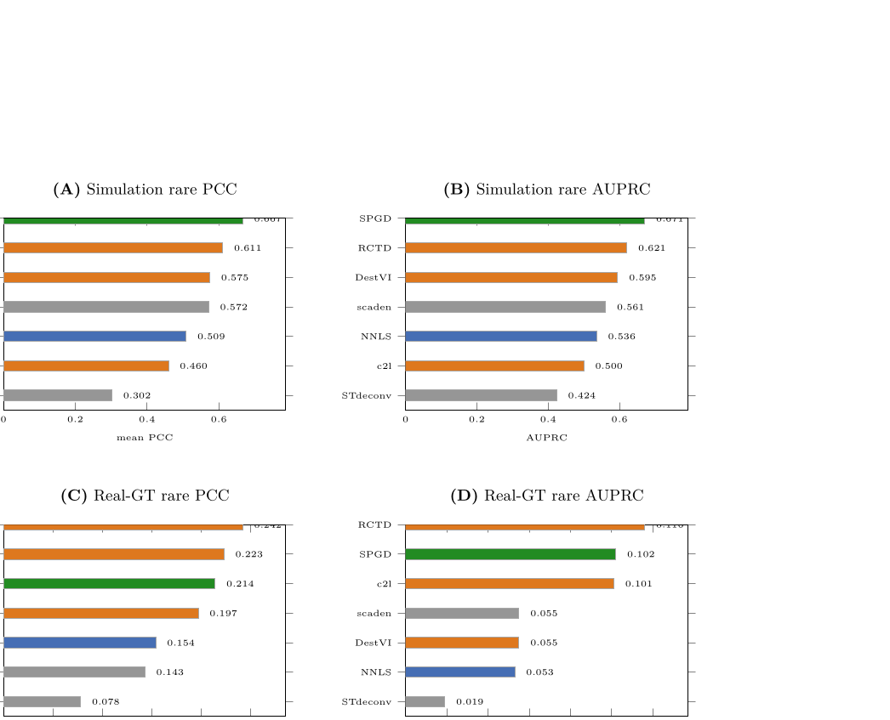
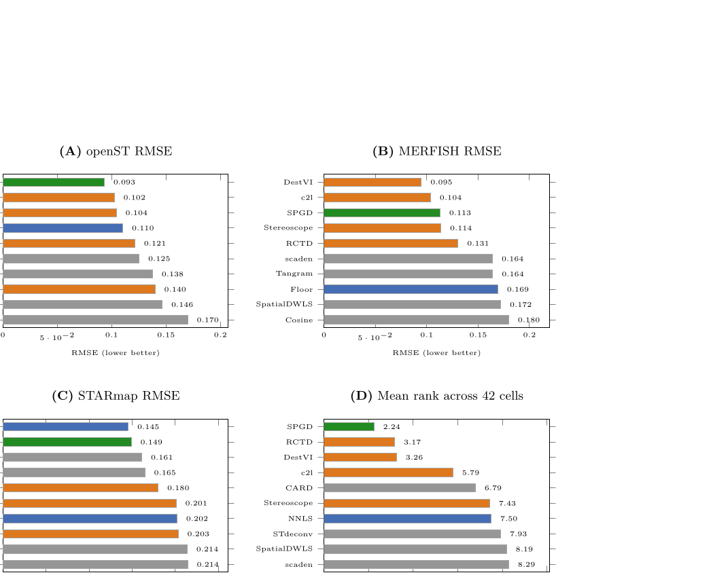
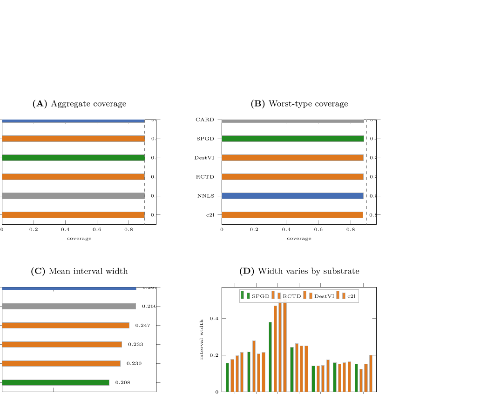
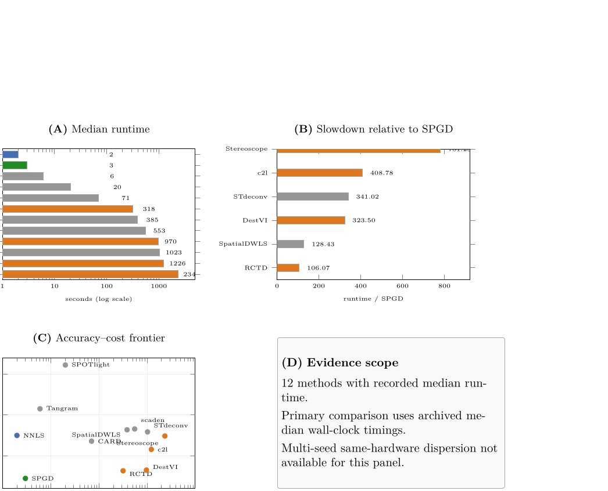

ZF Lab · spatial deconvolution · Computational Biology and Chemistry
Spot composition across platform, compartment, and donor
SPGD estimates the cell-type mix inside each spatial spot. The object that moves is that mix — imaging platform, tissue compartment, mixing regime, donor — not a rank table on the same mixtures.
DestVI STARmap RMSE 0.203 lock
No method dominates
Tiny ΔRMSE is a practical zero
3
Platforms: openST, MERFISH, STARmap
8
Substrates spanning same-platform, cross-platform, simulation, real-GT, and cross-donor
3
Compartments on real tissue: tumor · stroma · macrophage
2
Donors on CosMx skin/BCC: spots from one patient, reference from another

The journey
Pick a route through the paper
01
02
03
04
Abstract
Competitive, not dominant: three losses in forty comparisons, never a universal win.
Figures
Maps first. Platform, donor, and rare-type objects next. Scores on the same mixtures last.
Code
Zenodo until a public HTTPS remote exists. The private workbench is not a badge.
Cite
Manuscript stub plus archive DOI. No invented Editorial Manager ID.
Standalone
Abstract
We build a pre-specified design-log benchmark for spatial-transcriptomics cell-type deconvolution spanning same-platform, cross-platform, and simulated assays, three co-registered real-ground-truth references, and a separate cross-donor replication (eight substrates total; seven in the primary 42-cell rank pool). Thirteen methods are scored on six metrics with bootstrap confidence intervals and paired descriptive tests. SPGD is a specificity-weighted, Poisson, self-gating, platform-corrected non-negative estimator that is training-free, GPU-free, and free of dataset-specific tuning (algorithmic constants fixed a priori). Under a shared zero-tuning budget against a ten-method SOTA panel, SPGD wins most paired comparisons and loses three of forty controlled comparisons—to cell2location and DestVI on MERFISH and scaden on the simulation—with further losses on real skin. Panel caveats matter: SPOTlight trails trivial baselines (mean rank 16.12 of 17), and Stereoscope collapses on STARmap (RMSE 0.338). Cell2location’s MERFISH edge localizes to a near-collinear neuronal pair (r = 0.83); specificity weighting recovers about half that gap. DestVI also wins MERFISH and leads on skin but is fragile cross-platform (worst-case rank 11 on STARmap). SPGD is the most consistent method overall at roughly 100–400× lower cost. Per-type ranks are reference-dependent: rank-4 on the 307-gene Xenium reference (realgt) but rank-2 on an orthogonal whole-transcriptome scFFPE reference (realgt2) with the same ground truth. No single method dominates; linear-baseline platform-shift failure is substrate-specific and did not replicate out of sample; SPOTlight failed on all substrates under our default runner.
Maps first
Figures
The physical object is the spot mix. Rank, runtime, and calibration width are scores on the same mixtures.
Real-tissue maps
object · compartmentCross-donor mix
object · donor
Rare-type mix
object · mixing regime
Scores on the same mixtures
Not the biology
ScoreTheater These panels keep the mixtures fixed and change the score: RMSE, interval width, wall-clock. They are evidence, not tissue. iid spot-bootstrap intervals are not a spatial-uncertainty statement.
Platform RMSE
ScoreTheater
Calibration width
ScoreTheater
Runtime
ScoreTheater
Reproducibility
Code
No public HTTPS GitHub remote for this leaf. The experimental workbench is private and is not linked here.
Use the Zenodo archive until a public repository exists. Do not treat a 404 Pages URL as a Site badge.
Zenodo 10.5281/zenodo.21869991
Code — not public yet
Citation
Cite
Manuscript companion. Archive DOI only — no article DOI and no Editorial Manager ID.
@unpublished{fu2026spgd,
author = {Fu, Zeyu},
title = {A training-free, self-gating deconvolution method is competitive with default state-of-the-art under a zero-tuning budget across same- and cross-platform spatial transcriptomics},
year = {2026},
note = {Manuscript companion. Archive DOI: 10.5281/zenodo.21869991},
doi = {10.5281/zenodo.21869991}
}